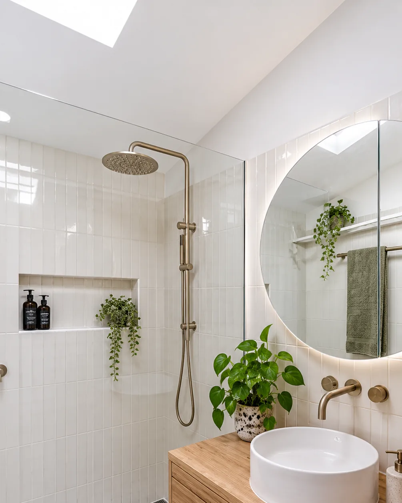

- Home
- Shower Renovations
Shower renovations in Sydney
Replace a cramped framed cubicle or a tired shower-over-bath with something open and easy to clean. We rebuild showers from the base up, including waterproofing, falls, tiling, glass and tapware, so they look good and drain properly.
What we can do for your shower
A new shower can change the whole feel of a bathroom, without always needing to renovate the entire room.
We'll help you choose the right configuration, glass and fixtures for your space, then build it properly from the base up.
Get a Quote- Walk-in & open showersFrameless, open-plan showers with a single fixed panel for a clean, spacious look.
- Shower-over-bath upgradesNew tiling, rail showers and frameless bath screens that modernise the space.
- Framed cubicle replacementOld aluminium-framed cubicles removed and replaced with a frameless design.
- Recessed nichesBuilt-in storage for shampoo and soap that sits flush with the wall. No more caddies.
- Rail showers & tapwareRain heads, hand showers and mixers in chrome, brushed nickel, matte black and more.
- Waterproofing & drainageA new waterproof membrane with correct falls to a standard or linear drain.
Popular options
Every bathroom is different. These are the upgrades we're asked for most.
Frameless glass
Clear, minimal glass panels and screens that make even a small room feel bigger.
Rain & rail showers
Overhead rain heads paired with handheld showers for comfort and easy cleaning.
Feature tiling
Large-format, marble-look, handmade-style or mosaic, chosen to suit the room.
Linear drains
A long strip drain allows a single floor fall and a step-free entry.
Built-in niches
Recessed shelving, tiled to line up perfectly with the surrounding wall.
Easy-clean finishes
Smart tile and grout choices that keep your shower looking new for longer.

Frameless glass, clean tiling
A frameless panel, a good rail shower and the right tiles make a big difference to how a bathroom looks and works.
Whether you want a walk-in shower with a single fixed panel or a refreshed shower-over-bath, we'll plan the layout, waterproofing and drainage so it looks good and works properly.
Book a Free QuoteHow a shower renovation works
A shower renovation is a focused project, but the steps behind the tiles matter just as much as in a full renovation.
1. Assess & advise
We look at your current shower, the space available and what's achievable, then talk through options.
2. Quote & select
A fixed, itemised quote, plus help choosing glass, tapware, tiles and drainage.
3. Rebuild
Strip-out, base preparation, waterproofing, tiling, glass and tapware installed.
4. Final check
Water-tested, sealed, cleaned and ready for your first shower.

“They kept us updated every step and kept the mess to a minimum. The waterproofing and tiling are excellent, and the price matched the quote exactly.”
Frequently Asked Questions
Can I convert my bath into a walk-in shower?
In many bathrooms, yes. We'll check the space, plumbing and floor on site and let you know what's practical, including any changes needed to drainage.
What is a linear drain and do I need one?
A linear drain is a long, slim drain that sits along one edge of the shower. It allows the floor to fall in one direction, which suits large-format tiles and step-free entries. It isn't essential, but it's a popular choice for a clean, modern look.
Can you replace just the shower without touching the rest of the bathroom?
Often, yes. Depending on the layout, we can rebuild the shower area on its own. We'll take care to blend new work with the existing finishes as closely as possible, and let you know if a wider update would give a better result.
Is frameless glass hard to keep clean?
Not at all. With fewer frames and tracks there are fewer places for grime to build up. A quick squeegee after showering keeps glass looking clear.